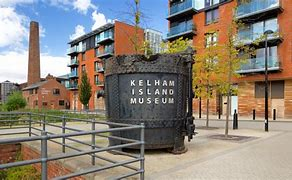

Kelham Island Museum
The Kelham Island Museum is an industrial museum on Alma Street, alongside the River Don, in the centre of Sheffield, England. It was opened in 1982.
The Site
The island on which it is located is man-made, resulting from the construction of a mill race, in the 12th century, which diverted water from the River Don to power a corn mill belonging to the Lord of the Manor.
It is reported that the island was subsequently named after the Town Armourer, Kellam Homer, who owned a grinding workshop on the neighbouring goit (mill race) in 1637.
Having remained meadowland for much of its existence, John Crowley's Iron Foundry was built on the site in 1829 and continued in operation until the 1890s.
The site was flooded on 11 March 1864, when the Dale Dyke Dam broke, damaging workshops on the site.
Crowley's Iron Foundry was replaced by a power station in 1899 to provide electricity for the new fleet of trams in the city.
The power station operated until the 1930s when the building was used for storage and workshops.
These are the premises now occupied by the museum, along with Russell Works, once occupied by Messers Wheatman and Smith.
Russell Works now houses the Hawley Gallery and the Crucible Shop, both part of the museum.
The Museum
The museum houses exhibitions on science and Sheffield industry, including examples of reconstructed little mesters' workshops and England's largest surviving Bessemer converter.
This object received an Engineering Heritage Award in 2004 from the Institution of Mechanical Engineers.
The museum gives tours to local schools and has regular demonstrations of the 1905 River Don Engine, a 12,000 horsepower (9 MW) steam engine, which originally powered a local armour plate rolling mill.
The engine is remarkable for its ability to change direction very quickly, a feature that was necessary for the efficient rolling of heavy steel.
The engine rolled steel for nuclear reactors towards the end of its life (it was last used in production in 1978 at the River Don Works).
The museum is operated by the Sheffield Industrial Museums Trust. It is an Anchor Point of ERIH, The European Route of Industrial Heritage.
The Museum houses the prototype Sheffield-Simplex car, one of only three know to remain.
The car was described as, “one of the best and most remarkable vehicles available, representing the highest point to which motor design has yet attained”, by The Times in 1913.
The Benjamin Huntsman Clock, the first manufactured object to contain Crucible Cast Steel, can be seen in the Enid Hattersley Gallery.
The Museum also has a vast photographic archive which is used by authors for illustrating local history books.
Since 2009, the museum has housed the workshop of Stan Shaw, a little mester.
Shaw worked there and demonstrated knife making to the public until his death in 2021.
Flooding
The Museum suffered heavily in the Sheffield flood of July 2007 with water over a metre deep inundating the site, causing £1.5 million of damage.
Paintings by William Cowen and Henry Perlee Parker, a drawing master at Sheffield's Wesleyan College, were some of the objects damaged by the floodwater.
The Museum was closed for 18 months, reopening in September 2008.
The Museum received a national commendation from the Museums, Libraries and Archives Council (MLA) for its recovery from the 2007 floods.
The site is now protected by new flood defences which were completed in December 2011.